How NOT to design a volume control interface
Hilarious UI design ideas for the worst volume control interface in history 😂

Some very clever developers on Reddit have put their creative minds to the test to come up with some crazy ideas for the worst volume control UI design in history.
Obviously, there isn’t anything wrong with the standard volume control slider, it’s been around for ages and does its job well. As per Jakob’s Law, it’s safest to stick with common, tried and tested UI patterns that people are familiar with. If you’re not reinventing the wheel, there’s usually very little risk that there will be usability issues with your UI design.
Playing it safe might sound a bit boring, but you can save a lot of time and money on user testing by sticking with what people are used to. It will also give you more time to focus on solving more important problems that will make a larger impact.
That being said, I love these crazy ideas on how we might reinvent the volume control to make it super complicated to use. Check them out below and let me know your favourite via Twitter.
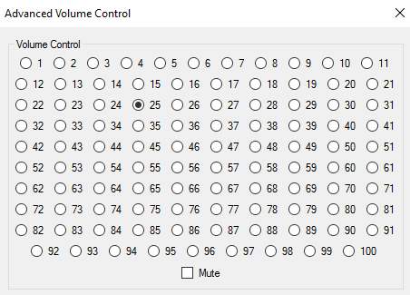
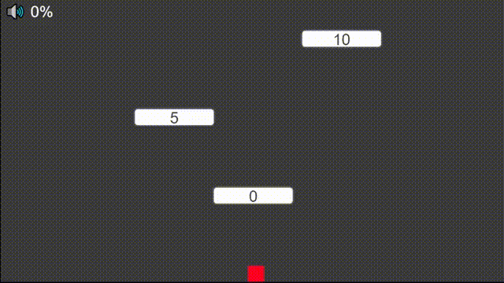
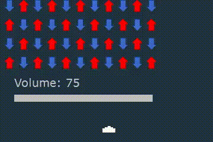
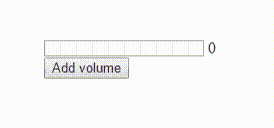
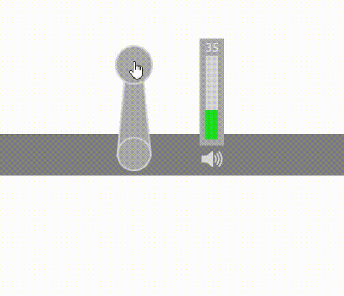
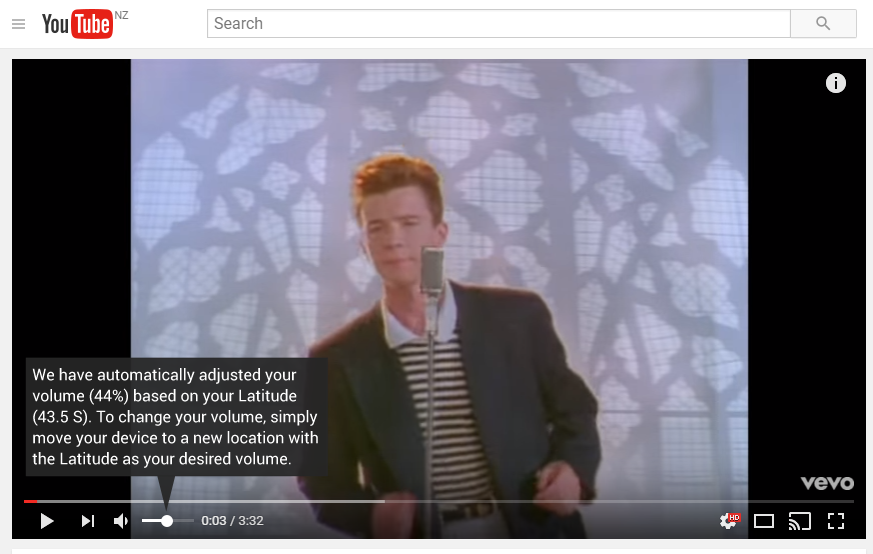
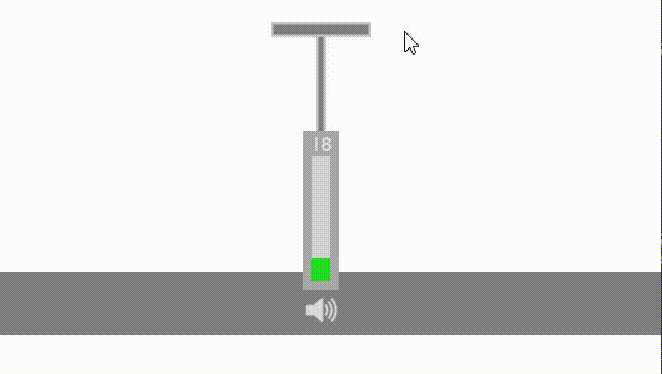
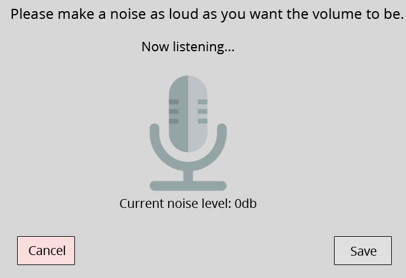
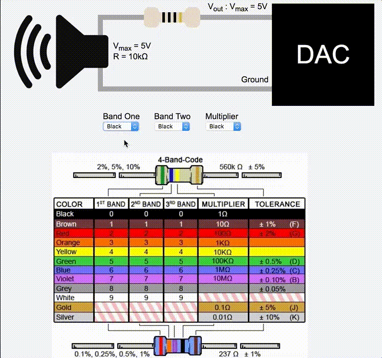
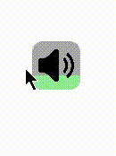
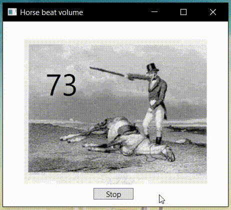
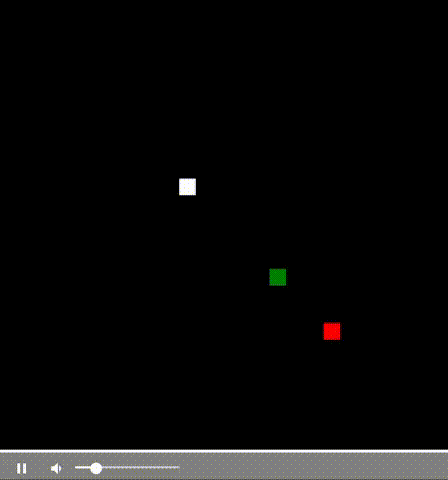
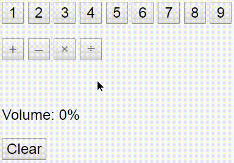
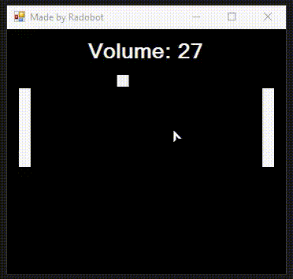
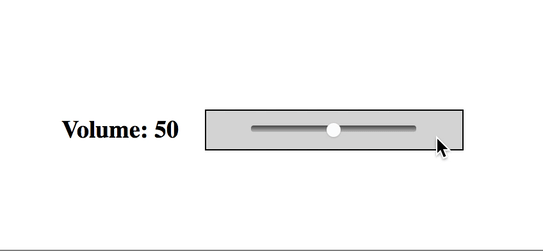
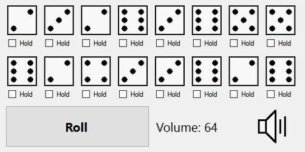
I hope you enjoyed these as much as I did, let me know your favourite via Twitter. You can also find more examples on Reddit.
If you’re looking to improve your UI design skills by applying practical, objective UI design principles, feel free to check out my UI design book and follow me for more tips.